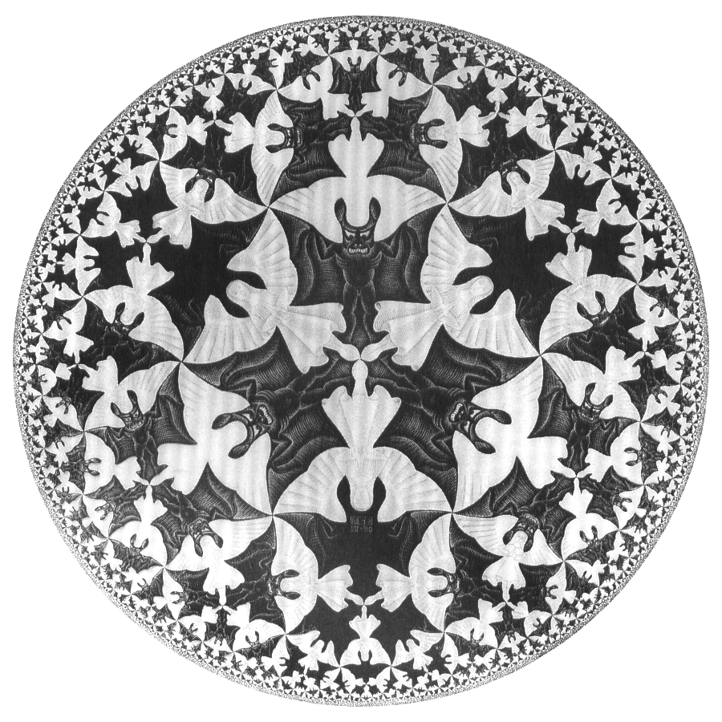
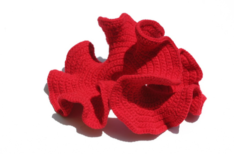
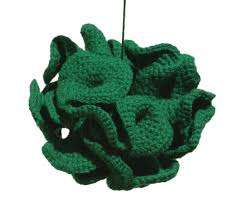
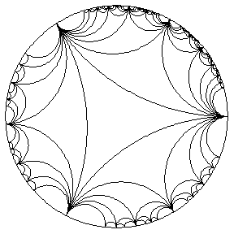
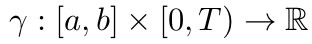
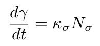
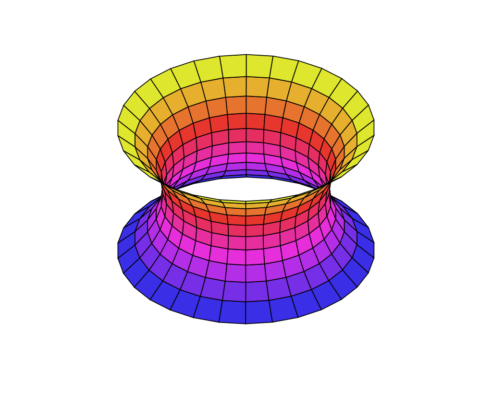
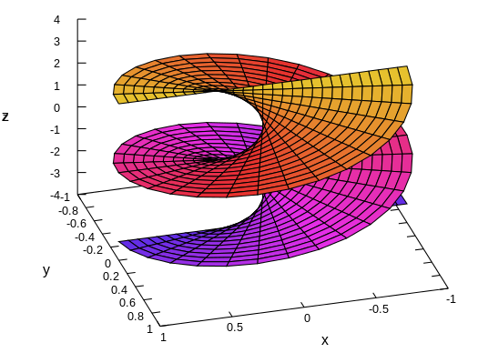
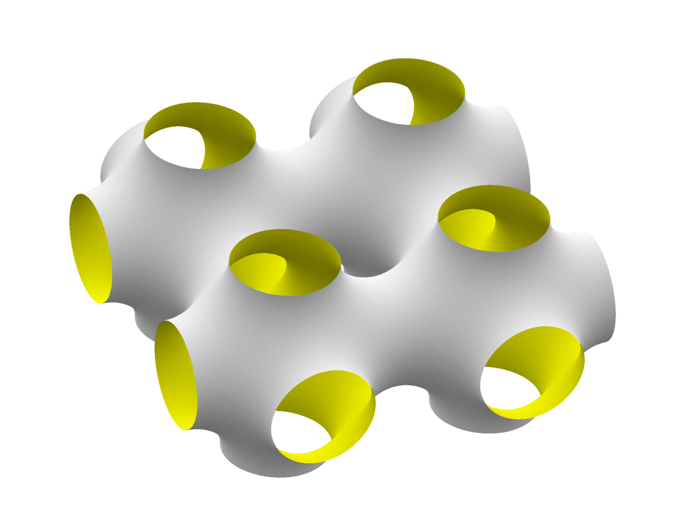
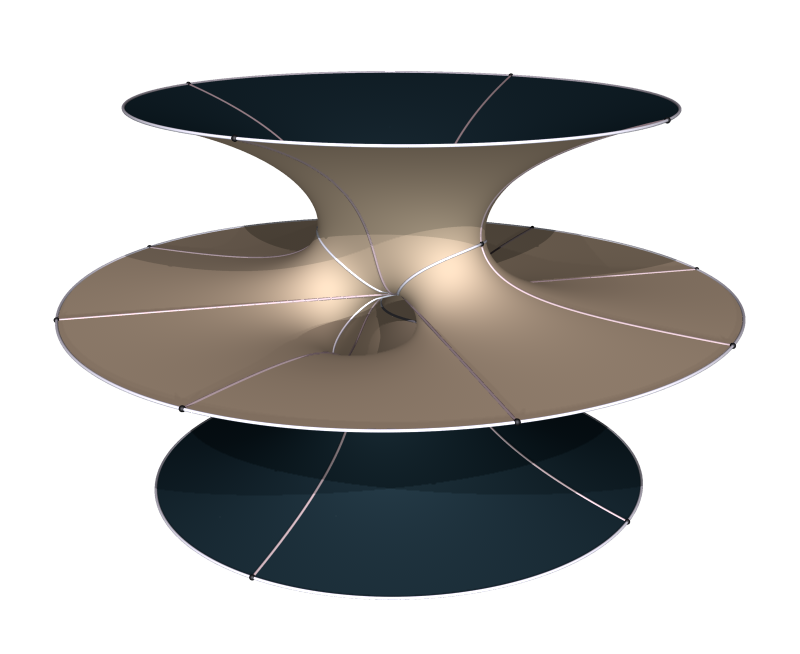

Below are various pictures of geometric shapes which were mentioned in the course so far which were too hard to draw on the board:
Pictures of the Hyperbolic Plane
Curve Shortening Flow
Minimal Surfaces
The Hyperbolic Plane

This is probably the most famous picture of the hyperbolic plane, drawn by the artist M. C. Escher. Each of the interlocking angels have the same area, as do each of the interlocking demons.
As mentioned in class the hyperbolic plane naturally sits in Minkowski Space as a hyperboloid, but it can be locally be put into Euclidean space, but it looks pretty weird. One way of doing this is with mathematics. Another is by knitwear: there are people who crochet hyperbolic planes to give surfaces that look like coral . e.g.

or

(Here is a website on how to make these...). For more information on mathematical knitting, have a look here .
More relevantly, here is an animation of a 1-parameter family of isometries of the hyperbolic plane in action, acting on geodesics (apologies for low resolution):

Curve Shortening Flow
We saw that curve shortening flow was given by a time dependant curve  such that

We may calculate explicitly the evolution of a circle:
The Circle
The first results on the curve shortening flow demonstrated that convex curves shrink to points, as in this example.
Then, Gage and Hamilton observed that if we rescale (both in time and space) so that the area inside the curve remains constant then any convex curve converges to a circle as we may see here .
Finally Grayson's theorem shows that any curve becomes convex before it becomes singular, yeilding fantastic "uncoiling" phenomena as we may see here (apologies, I programmed this pretty quickly, there are some numerical errors which mean the final circle accellerates off to the bottom right, but you get the idea...).
Minimal Surfaces
We recall that a minimal surface is one with H=0, or equivalently it is a stationary point of the area (which we may hope is a minimiser of area, hence the name). We explicitly calculated curvatures of:
The Catenoid

and
The Helicoid

I briefly mentioned:
The Schwarz p-surface

and also
Costa's surface

However this is nothing. You should all definitely check out the
Minimal surfaces at the Virtual Mathematics Museum
these pictures are amazing. Check out the gyroid, the double Eneper surface, Riemann's surface...hours of clicking...Also I strongly recommend clicking on individual surfaces and scrolling on interactive pictures, looking at the 3d versions with 3d glasses etc.